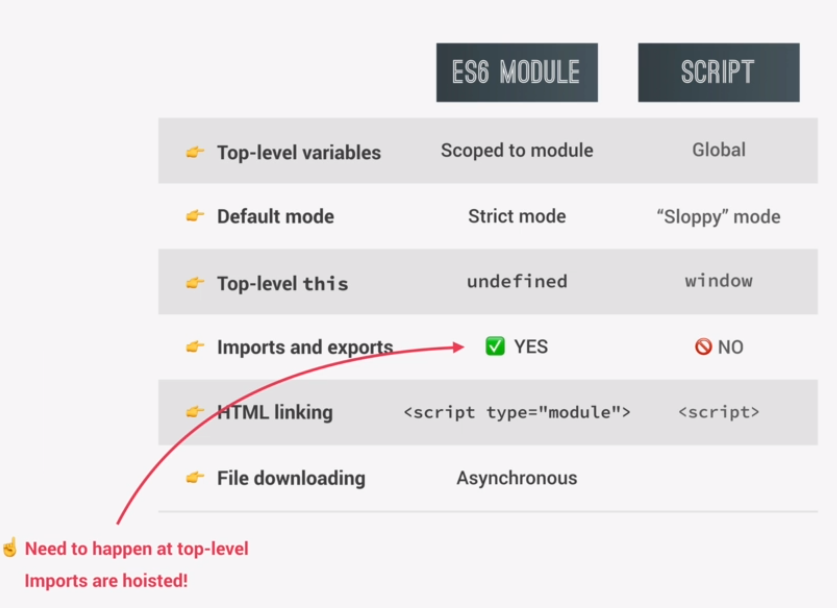
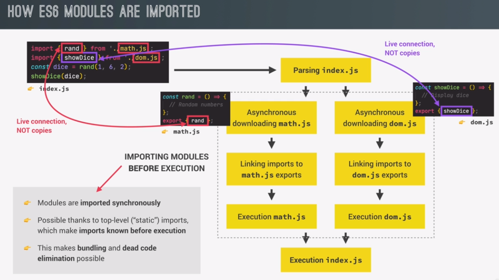

A module is a reusable piece of code that encapsulates implementation details of a certain part of our project.
that sounds a bit like a function or even a class, but the difference is that a module is usually a standalone file.
a module can also have imports and exports.
with exports, as the name says, we can export values out of a module for example, simple values or even entire functions. And whatever we export from a module is called the public API.
in the case of modules, this public API is actually consumed by importing values into a module.
just like we can export values in modules, we can usually also import values from other modules. And these other modules from which we import are then called dependencies of the importing module
As of ES6, JavaScript has a native built-in module system.
ES6 modules are modules that are actually stored in files and each file is one module.
in modules, all top level variables are scooped to the module. So basically variables are private to the module by default. And the only way an outside module can access a value that's inside of a module is by exporting that value. if we don't export, then no one from the outside can see the variable.
in scripts, on the other hand, all top level variables are always global and I showed you this in the map d project, remember? And this can lead to problems like global namespace pollution, where multiple scripts try to declare variables with the same name and then these variables collide.
ES6 modules always executed in strict mode. So there's no need to manually declare strict mode.
scripts execute in sloppy mode by default.
The this keyword is always undefined at the top level.
in scripts it points at the window object.
we can export and import values between them using this ES6 import and experts syntax. there is something really important to note about imports and exports, which is the fact that they can only happen at the top level. So as you know, outside of any function or any if block. Imports are hoisted.
Importing and exporting is impossible
in order to link a module to an HTML file, we need to use the script tag with the type attribute set to module
Script use a plain script tag.
ES6: always automatically happens in an asynchronous way. And this is true for a module loaded from HTML as well as for modules that are loaded by importing one module into another, using the import syntax.
scripts on the other hand are downloaded by default in a blocking synchronous way, unless we use the async or differ attributes on the script tag.
when a piece of code is executed, the first step is to parse that code. parsing basically means to just read the code, but without executing it. And this is the moment in which imports are hoisted.
the whole process of importing modules happens before the code in the main module is actually executed.
This means is that only after all imported modules have been downloaded and executed, the main index.js module will finally be executed as well.
this is only possible because of top level imports and exports that's because if we only export and import values outside of any code that needs to be executed, then the engine can know all the imports and exports during the parsing phase.
you might ask why do we actually want modules to be loaded in a synchronous way? Isn't synchronous bad? Well, the answer is that this is the easiest way in which we can do things like bundling and dead code elimination. So basically deleting code that's actually not even necessary. And trust me, this is very important in large projects with hundreds of modules and that includes third party modules from which we usually only want a small piece and not the entire module.
So by knowing all dependencies between modules before execution, bundlers like webpack and Parcel can then join multiple modules together and eliminate that code.
this is the reason why we can only import and export outside of any code that needs to be executed.
remember downloading actually happens in an asynchronous way. It is only the importing operation itself that happens synchronously.
after a module arrives, it's also parsed and the modules exports are linked to the imports in index.js.
When imported, the connection is a live connection. This means exported values are not copied to imports. Instead, the import is just a reference to the export at value like a pointer.
when the value changes in the exporting module, then the same value also changes in the importing module.
This is unique to ES6 modules. Other modules systems DO NOT work like this.
Module file is named shoppingCart.js and only contains: console.log('Exporting module');
Place script call in head of HTML file. You must specify the type attribute of module.
Load shoppingCart.js into the script.js file.
This prints: Exporting Module followed by Importing Module.
This shows the shoppingCart.js file is executed first.
<script type="module" defer src="script.js"></script> // script.js import './shoppingCart.js'; console.log('Importing module');
Add variables to shoppingCart.js file.
These variables are scoped to this module file so you can only use them there.
If you want to use them outside that file, you must use exports
There are 2 types of exports:
For a named export, just place 'export' in from of the code.
You can then import that variable into another script using 'import' followed by curly braces containing the variable name. Then add 'from' after.
// shoppingCart.js
const shippingCost = 10;
export const cart = [];
export const addToCart = function (product, quantity) {
cart.push({ product, quantity });
console.log(`${quantity} ${product} added to cart`);
};
// shoppingCart.js
import {addToCart} from './shoppingCart.js';
addToCart('bread', 5);
5 bread added to cart
This uses a named export to export multiple variables.
You can then import them all in a single statement.
// shoppingCart.js
const totalPrice = 237;
const totalQuantity = 23;
export { totalPrice, totalQuantity};
// script.js
import {addToCart, totalPrice, totalQuantity } from './shoppingCart.js';
addToCart('bread', 5);
console.log(totalPrice, totalQuantity);
5 bread added to cart
Use the word 'as' to rename a variable.
This renames totalQuantity in shoppingCart.js as tq.
This renames totalPrice in script.js as price.
You must also import the tq variable instead of totalQuantity.
// shoppingCart.js
const totalPrice = 237;
const totalQuantity = 23;
export { totalPrice, totalQuantity as tq };
// script.js
import {addToCart, totalPrice as price, tq} from './shoppingCart.js';
console.log(price, tq);
Use * followed by an Object name to import everything
You must then use this Object name when calling variables. For example: ShoppingCart.addToCart()
// script.js
import {addToCart, import * as ShoppingCart from './shoppingCart.js';
ShoppingCart.addToCart('bread', 5);
console.log(ShoppingCart.totalPrice);
Use Default exports when you only want to export 1 thing per module.
Export the value, not the variable.
Give it any name you want when importing. It will still import the default export.
You should use one default export per module.
export default function (product, quantity) {
cart.push({ product, quantity });
console.log(`${quantity} ${product} added to cart`);
}
// importing using the name 'add'
import add from './shoppingCart.js'
add('pizza', 2);
This is the same as above but also imports the named 'cart' import at the same time.
NOTE: This is not used in practice. You should import them separately.
export const cart = [];
export default function (product, quantity) {
cart.push({ product, quantity });
console.log(`${quantity} ${product} added to cart`);
}
import add, { cart } from './shoppingCart.js';
add('pizza', 2);
console.log(cart);
starting from this new ES2022 version, we can now use the await keyword outside of async functions, ONLY in modules.
This blocks the execution of the entire module.
// async is used outside of an async function
const res = await fetch('https://jsonplaceholder.typicode.com/posts')
// create 2nd await to parse the JSON data
const data = await res.json()
console.log(data);
CommonJS modules are important for us, because they have been used in Node.js, for almost all of its existence. So only very recently, ES Modules have actually been implemented, in Node.js.
the big consequence of this, is that almost all the modules, in the npm repository, still use the CommonJS module system.
just like ES6 modules, in CommonJS, one file, is one module.
Export using export. followed by name of the export.
This export Object does not work in the browser, only Node.js.
Call require function to import. Again, require is part of the Node.js specification, not the browser.
export.addTocart = function (product, quantity) {
cart.push({ product, quantity });
console.log(
`${quantity} ${product} added to cart (sipping cost is ${shippingCost})`
);
};
// Import
const { addTocart } = require('./shoppingCart.js');